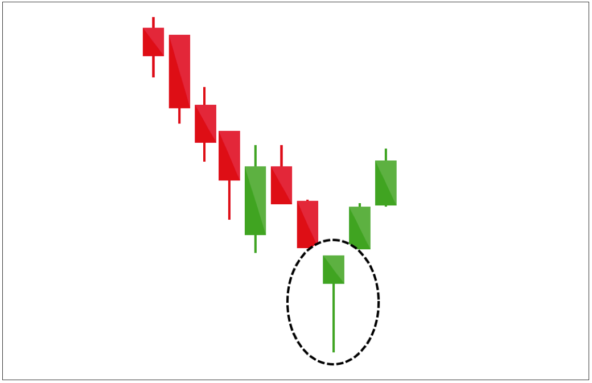
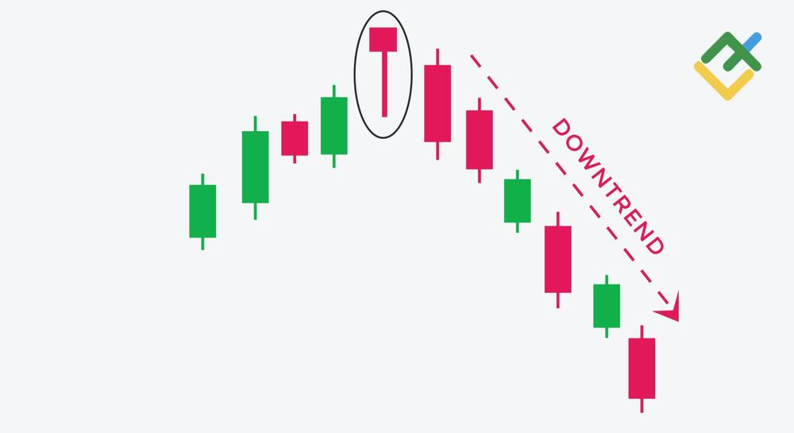

MA - Media móvil
Direccion y pendiente (MA corto plazo)
Ascencente
Descentente
Plana
Direccion y pendiente (MA corto plazo)
Ascencente
Descentente
Plana
Relacion entre medias moviles Media móvil de período más corto con respecto al de período más largo
No hay cruce
Cruce por encima
Cruce por debajo
(MA) de corto plazo se encuentra por encima del MA de largo plazo,sin cruce
(MA) de corto plazo se encuentra por debajo del MA de largo plazo,sin cruce
Calcular tendencia para MA
{{ resultado_ma }}
{{ observaciones_ma }}
EMA - Media móvil exponencial
Direccion y pendiente
Ascencente
Descentente
Plana
Cruce de medias moviles Media móvil de período más corto con respecto al de período más largo
Corto plazo cruza por encima de la EMA de largo plazo
Corto plazo cruza por debajo de la EMA de largo plazo
Calcular tendencia para EMA
{{ resultado_ema }}
{{ observaciones_ema }}
WMA - Media móvil ponderada
Dirección de la WMA en relación con el precio
Precio por encima de WMA
Precio por debajo de WMA
Plana
Cruce con el precio
Cruce alcista, donde el precio cruza por encima de la WMA
Cruce bajista, donde el precio cruza por debajo de la WMA
Sin cruce
Cruce de medias moviles Media móvil de período más corto con respecto al de período más largo
Corto plazo cruza por encima de la WMA de largo plazo
Corto plazo cruza por debajo de la WMA de largo plazo
Calcular tendencia para WMA
{{ resultado_wma }}
{{ observaciones_wma }}
BOLL - Bandas de Bollinger
Bandas y precios
Precio de la criptomoneda se acerca a la banda superior
Precio de la criptomoneda se acerca a la banda inferior
Cruce por encima de la banda superior
Cruce por debajo de la banda inferior
Cruce ascendente sobre la línea media
Cruce descendente bajo la línea media
Neutral
Calcular tendencia para BOLL
{{ resultado_boll }}
{{ observaciones_boll }}
VWAP - Precio promedio ponderado por volumen
Indicador de Tendencia Intradía
El precio se mantiene consistentemente por encima del VWAP
El precio se mantiene consistentemente por debajo del VWAP
El precio se acerca por encima a VWAP
El precio se acerca por debajo a VWAP
Plana
Calcular tendencia para VWAP
{{ resultado_vwap }}
{{ observaciones_vwap }}
AVL - Línea de valor promedio
Tendencia
AVL está subiendo
AVL está cayendo
Lateral
Calcular tendencia para AVL
{{ resultado_avl }}
{{ observaciones_avl }}
TRIX - Promedio exponencial triple
Líneas de señal y cruce en cero
Valores positivos
Valores negativos
Línea de señal del TRIX está por encima de cero y el TRIX cruza por encima de cero desde valores negativos
Línea de señal del TRIX está por debajo de cero y el TRIX cruza por debajo de cero desde valores positivos
Ninguna
Cruce en cero
Cruce por encima de cero
Cruce por debajo de cero
Ninguna
Calcular tendencia para TRIX
{{ resultado_trix }}
{{ observaciones_trix }}
SAR - Stop and Reverse
Tendencia
Puntos están por debajo del precio actual en un mercado bajista
Puntos están por encima del precio actual en un mercado alcista
Puntos están por debajo del precio actual en un mercado alcista
Puntos están por encima del precio actual en un mercado bajista
Cambios de dirección
SAR está por encima de los precios y luego se mueve por debajo de ellos
SAR está por debajo de los precios y luego se mueve por encima de ellos
Ninguna
Calcular tendencia para SAR
{{ resultado_sar }}
{{ observaciones_sar }}
Vol - Volumen
Tendencia
Precio sube y el volumen también aumenta
Precio cae y el volumen también aumenta
Precio cae y el volumen aumenta
Precio sube y el volumen disminuye
Divergencias
Precio sube y el volumen también aumenta
El precio sube pero el volumen disminuye
Calcular tendencia para VOL
{{ resultado_vol }}
{{ observaciones_vol }}
MACD - Media móvil de convergencia/divergencia
Cruce de las líneas MACD y señal
MACD (barras) cruza por encima de la línea de señal (DEA)
MACD (barras) cruza por debajo de la línea de señal (DEA)
Divergencia/convergencia
El precio de la criptomoneda está alcanzando nuevos máximos, y el MACD está siguiendo
El precio de la criptomoneda está alcanzando nuevos máximos, pero el MACD no está siguiendo
Ninguna
DIF/DEA
Línea de diferencia (DIF) está por encima de la línea de señal (DEA) y ambas líneas están aumentando
Linea DIF está por debajo de la DEA pero ambas líneas están subiendo
La línea de diferencia (DIF) está por debajo de la línea de señal (DEA) y ambas líneas están cayendo
La DIF está por encima de la DEA pero ambas líneas están cayendo
Calcular tendencia para MACD
{{ resultado_macd }}
{{ observaciones_macd }}
RSI - Índice de fuerza relativa
Sobrecompra y sobreventa
RSI cae por debajo de 30
RSI se encuentra por encima de 70
RSI entre 30 y 70
Divergencia/convergencia
El precio de la criptomoneda está alcanzando nuevos máximos, y el MACD está siguiendo
El precio de la criptomoneda está alcanzando nuevos máximos, pero el MACD no está siguiendo
Ninguna
Ir a página web
Calcular tendencia para RSI
{{ resultado_rsi }}
{{ observaciones_rsi }}
MFI - Money Flow Index
Sobrecompra y sobreventa
MFI por debajo de 20
MFI por encima de 80
Neutral
MFI y Precio
MFI y precio subiendo simultáneamente
MFI y precio bajando simultáneamente
MFI sube y precio bajando desciende
MFI baja y precio bajando asciende
MFI cruza por encima del nivel de sobrecompra y luego cae por debajo
Incremento en el MFI junto con aumento en el volumen de operaciones
Calcular tendencia para MFI
{{ resultado_mfi }}
{{ observaciones_mfi }}
KDJ - Indicador estocástico
Sobrecompra y sobreventa
%K cruza por encima de %D desde abajo
%K cruza por debajo de %D desde arriba
%K y %D se mantienen por encima del nivel de sobrecompra (por ejemplo, 80%) y luego %K cruza por debajo de %D
%K y %D se mantienen por debajo del nivel de sobreventa (por ejemplo, 20%) y luego %K cruza por encima de %D
Calcular tendencia para KDJ
{{ resultado_kdj }}
{{ observaciones_kdj }}
OBV - Volumen de balance
Confirmación de tendencias
El precio está subiendo y el OBV también está subiendo
El precio está bajando y el OBV también está bajando
Calcular tendencia para KDJ
{{ resultado_obv }}
{{ observaciones_obv }}
CCI - Índice de canal de materias primas
Sobrecompra y sobreventa
La línea %K está por encima del 80% (sobrecompra)
La línea %K está por debajo del 20% (sobreventa)
CCI cruza por encima de +100
CCI cruza por debajo de -100
Calcular tendencia para cci
{{ resultado_cci }}
{{ observaciones_cci }}
StochRSI - Índice de fuerza relativa
Sobrecompra y sobreventa
Un valor por encima de 0.8
Un valor por debajo de 0.2
RSI entre 30 y 70
K y D
%K cruza por encima de la línea %D
%K cruza por debajo de la línea %D
Calcular tendencia para StochRSI
{{ resultado_stochrsi }}
{{ observaciones_stochrsi }}
ATR -
Sobrecompra y sobreventa
Un valor por encima de 0.8
Un valor por debajo de 0.2
RSI entre 30 y 70
Calcular tendencia para StochRSI
-
-
Señal en grupos
Indique:
Si
No
Calcular tendencia para señal
{{ resultado_senal }}
-
Prediccion binance
Indique:
Alcista
Bajista
Neutral
Calcular tendencia para señal
{{ resultado_pred_binance }}
-
Patron velas - vela martillo

Ir a página web
Condiciones
Cumple con la condiciones
No cumple
Calcular tendencia para vela martillo
-
-
Patron velas - Hombre ahorcado

Ir a página web
Condiciones
Cumple con la condiciones
No cumple
Calcular tendencia para vela martillo
-
-
Patron velas - Velas envolventes
Ir a página web
Condiciones
Cumple con la condiciones
No cumple
Calcular tendencia para vela martillo
-
-
Patron velas - Dark Cloud Cover
Ir a página web
Ir a página web
Condiciones
Cumple con la condiciones
No cumple
Calcular tendencia para vela martillo
-
-
Patron velas - Piercing Pattern
Ir a página web
Condiciones
Cumple con la condiciones
No cumple
Calcular tendencia para vela martillo
-
-
Canal Keltner
Ir a página web
Condiciones
Cumple con la condiciones
No cumple
Calcular tendencia para vela martillo
-
-